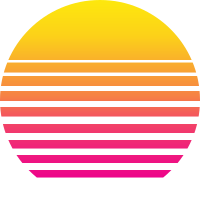

Air Monitor

Air Monitor is a ESP32 micro-controller powered VOC (Volatile Organic Compound) and CO2 monitor.
It graphs the CO2 and VOC on an LCD over various intervals.
A custom app allows the data to be graphed on your Android device.
RESUME
I have built many open source projects in my spare time. I try to focus on projects that have a real world
impact by either improving or simplifying life.
| LANGUAGE | IMPLEMENTATION | PROJECT |
|---|---|---|
| Kotlin | Website and backends. | ThingSpeak Weather Station, Website |
| JavaScript | Websites, single page web apps, native apps | Channel Grapher, AirMonitor ReactNative App, Websites |
| C/C++ | Embedded applications, microcontrollers | Weather Station, LoRaWan Weather Station, LED Clock |
| HTML/CSS | Web design | Channel Grapher, Websites |